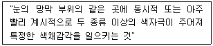

섬유디자인산업기사 (2004-08-08 기출문제)
1과목: 디자인개론
1. 패턴디자인의 제작 목적으로 가장 적합한 것은?
- 유행보다는 독창적인 제품
- 최대의 전시효과
- 제품생산에 의한 소비자 충족
- 공예적인 성격에 중점
(정답률: 알수없음)

2. 우리나라 섬유 산업의 특징에 대한 설명 중 틀린 것은?
- 수출 주도 산업으로 외화 획득이나 고용 효과면에서 중요한 역할을 해냈다.
- 기술 및 패션 개발을 소홀히 하여 기술 수준이 낮다.
- 주요 기술 및 패션의 해외 의존도가 매우 낮다.
- 국제 경쟁력이 크게 약화되고 후발 개도국의 추적에 기존 시장이 잠식하고 있다.
(정답률: 알수없음)
3. 스크린 톱 사이즈(Screen top size)를 설명한 것 중 알맞은 것은?
- 날염시 원단길이 방향으로 One Repeat되는 간격을 말한다.
- 날염시 스크린 형틀을 말한다.
- 스크린톱 사이즈는 한가지로 정해져 있다.
- 날염시 원단의 폭을 말한다.
(정답률: 알수없음)
4. 바우하우스 교육 프로그램의 주요 성격으로 알맞은 것은?
- 회화, 조형 - 공예운동
- 공예, 회화 - 순수조각운동
- 건축, 회화 - 수공예운동
- 공예, 조형 - 건축공예운동
(정답률: 알수없음)
5. 패턴디자인의 배열방법이 아닌 것은?
- 사방이음무늬
- 1/2스텝
- 천지스텝
- 오버랩
(정답률: 알수없음)
6. 상품기획 경로가 아닌 것은?
- 거래처 대상
- 소재 결정
- 디자인 컨셉트
- 모델링 제작
(정답률: 알수없음)
7. 디자인의 원리 중 조화를 나타내는 요소로 가장 거리가 먼 것은?
- 통일성
- 유사성
- 대칭성
- 대비성
(정답률: 알수없음)
8. 디자인에서 상품에까지 연결되는 실제적인 작업공정에서 가장 중요한 3가지 요소가 아닌 것은?
- 시장성
- 가공성
- 유행성
- 예술성
(정답률: 알수없음)
9. 양적 혹은 질적으로 서로 다른 요소를 말하며 디자인상의 무늬와 색의 관계를 각각 다르게 하여 그 차이를 효과적으로 나타내는 패턴의 기초 조형 원리는?
- 대비
- 균형
- 강조
- 리듬
(정답률: 알수없음)
10. 날염법에 따른 특징 설명 중 직접날염에 대한 설명으로 맞는 것은?
- 작업능률에 있어 발염 날염보다 생산성이 저조하다.
- 생산비용이 방염 날염보다 훨씬 많이 든다.
- 옅은 색 바탕에 짙은 색 문양을 주로 사용한다.
- 가장자리가 선명한 입체적인 무늬, 형 맞춤에 용이한 무늬가 좋다.
(정답률: 알수없음)
11. 디자인의 의미로 가장 옳은 것은?
- 실용적인 도면
- 조형 계획
- 예술적인 실루엣
- 시각 계획
(정답률: 알수없음)
12. 무늬를 칼로 오려내어 원단위에 올려놓고 날염풀을 칠하여 나타내는 방법은?
- 핸드스크린 날염
- 블록 날염
- 형지 날염
- 분무 날염
(정답률: 알수없음)
13. 2차원(평면)의 구성요소 중 개념요소가 아닌 것은?
- 점
- 선
- 면
- 색
(정답률: 알수없음)
14. 올바른 배색방법으로 볼 수 없는 것은?
- 두 색 사이는 명료한 것이 좋다.
- 자극도가 강한 색은 면적을 작게 한다.
- 전체 색조를 통일해서 사용한다.
- 색상이 단조로울때는 악센트를 피한다.
(정답률: 알수없음)
15. 아르데코의 특징이라 볼 수 없는 것은?
- 기능적이고 고전적인 직선미
- 추상화와 유선형화
- 연속적인 곡선의 선율
- 강렬하고 밝은 색채대비
(정답률: 알수없음)
16. 디자인 페이퍼 위에 물감을 붓에 묻혀 뿌리거나 떨어뜨려 패턴을 표현하는 기법은?
- 스탬핑 기법
- 드리핑 기법
- 스크래치 기법
- 텍스처 기법
(정답률: 알수없음)
17. 패턴의 리피트 종류 중 건축적 형태를 직물에 전이시킨 것으로 타원형을 형성하며 반곡선형 즉, 양파 모양의 무늬를 아래위로 연결시킨 패턴으로 우아하고 부드러운 느낌을 주는 것은?
- 오지 (Ogee)
- 브릭 (Brick)
- 스케일 (Scale)
- 스트라이프 (Stripe)
(정답률: 알수없음)
18. 상품기획 단계에서 라디오, TV, 잡지, 카탈로그, 세일즈, 상품광고 등에 홍보활동을 펼치는 기획활동을 무엇이라 하는가?
- 판매기획
- 생산기획
- 광고기획
- 판촉기획
(정답률: 알수없음)
19. 아르누보 양식이 건축외관에 남긴 업적은?
- 철의 사용
- 흙벽돌의 사용
- 색채의 변화
- 유리의 사용
(정답률: 알수없음)
20. 섬유디자인의 조건이 아닌 것은?
- 아름다운 디자인이어야 한다.
- 기능적인 디자인이어야 한다.
- 개성적이고 독창적인 참신한 디자인이어야 한다.
- 저가 소재에 고가 염료를 필요로 하는 디자인이어야 한다.
(정답률: 알수없음)
2과목: 색채학
21. 스펙트럼에서 빛이 분광될 때 그 굴절률의 변화를 바르게 설명한 것은?
- 파장이 짧을수록 굴절률은 작다.
- 파장이 길수록 굴절률이 작다.
- 파장의 길고 짧음에 따른 굴절률은 변화가 없다.
- 파장의 길고 짧음에 따른 굴절률은 정비례한다.
(정답률: 알수없음)
22. 빛의 삼원색을 혼합하였을 경우의 색은?
- 검정색
- 흰색
- 보라색
- 회색
(정답률: 알수없음)
23. 색채 계획을 세울 때 가장 우선 해야 할 일은?
- 색채 환경 분석
- 색채 심리 분석
- 색채 전달 계획
- 색채 규격 계획
(정답률: 알수없음)
24. 먼셀은 각 색의 평균명도가 N5가 될 때 색들이 조화를 이룬다는 가정하에 배색의 조화를 제시하였다. 다음 중 거리가 먼 것은?
- 채도는 같으나 명도가 다른 색채들을 선택하면 조화롭다.
- 명도는 같으나 채도가 다른 색채들을 선택하면 조화롭다.
- 명도와 채도가 같이 달라지지만 순차적으로 변화하는 색채들을 선택하면 조화롭다.
- 채도는 다르나 명도가 다른 보색을 배색할 경우 색상의 면적은 작을수록 조화롭다.
(정답률: 알수없음)
25. 어떤 색을 30초간 응시하도록 한 후 그 자극을 치운 이후에도 여전히 색의 감각이 남아 영향을 미치는 생리적인 현상은?
- 보색 잔상
- 색상 대비
- 채도 대비
- 명도 대비
(정답률: 알수없음)
26. 색채계획 과정 중 디자인 적용단계에서 필요한 능력은?
- 자료수집 능력
- 색채구성 능력
- 마케팅 능력
- 아트디렉션 능력
(정답률: 알수없음)
27. 진한색, 연한색, 흐린색, 맑은색등 색의 지각적인 면에서 색의 강약을 설명하는 것은? (먼셀 표색계)
- 색상
- 채도
- 명도
- 명암
(정답률: 알수없음)
28. 표준이 되는 순색의 그룹으로 이루어진 톤은?
- 엷은(pale)
- 옅은(light)
- 선명한(vivid)
- 부드러운(soft)
(정답률: 알수없음)
29. 먼셀의 표색기호는?
- Y90R 40 20
- 2R pa
- 5R 5/14
- W3.5B44 C52.5
(정답률: 알수없음)
30. 오스트발트의 색상환에 붙여진 번호는?
- 0~23
- 1~25
- 0~24
- 1~24
(정답률: 알수없음)
31. 색의 차이를 느끼게 하는 가장 기본적인 속성은?
- 한난 대비
- 색상 대비
- 명도 대비
- 채도 대비
(정답률: 알수없음)
32. 형광등을 처음 켜면 푸른 기미를 느끼지만 시간이 경과하면 푸른 기미를 느낄 수 없다. 이 같은 현상을 무엇이라 하는가?
- 암순응
- 명순응
- 색순응
- 명, 암순응
(정답률: 알수없음)
33. 색채는 시간성과 속도감의 지각에도 영향을 주는데 색채사용이 부적절한 것은?
- 상가, 다방 - 빨강계열
- 수용시설, 역 대합실 - 파랑계열
- 병원의 벽면 - 난색계열
- 경주용 자동차 - 밝고 채도 높은 빨강계열
(정답률: 알수없음)
34. 오스트발드(Ostwald) 표색계의 중요한 이론으로 볼 수 없는 것은?
- 모든 빛을 완전하게 흡수하는 이상적인 흑색
- 모든 빛을 완전하게 반사하는 이상적인 백색
- 특정파장 영역의 빛을 반사, 또는 흡수하는 이상적인 순색
- 색상에 따라 각기 달라지는 채도단계
(정답률: 알수없음)
35. 박명시(twiling vision)란 무엇인가?
- 추상체와 간상체가 동시에 함께 활동하는 것이다.
- 점차 밝아질 때 장파장으로부터 회복된다.
- 점차 어두워지면 장파장인 붉은 색의 명시도가 떨어진다.
- 무선파에 관련된다.
(정답률: 알수없음)
36. 색채의 삼속성이 맞는 것은?
- 색상, 명도, 채도
- 색환, 명도, 채도
- 빛, 조도, 채도
- 빛, 조도, 색상
(정답률: 알수없음)
37. 톤(Tone)의 배색에 대한 설명이다. 틀린 것은?
- 톤은 명암, 농담, 강약 등의 색조화이다.
- 톤이라 함은 일상생활의 느낌 그 자체이다.
- 톤이나 이미지를 정확히 전달하는 데는 동일 또는 유사의 배색이 좋다.
- 유사톤의 배색은 사람의 주의를 끄는 배색이어서 강한 인상력을 가진다.
(정답률: 알수없음)
38. 색료의 3 원색을 함께 섞으면 나타나는 색은?
- 흰색
- 노랑
- 빨강
- 검정
(정답률: 알수없음)
39. 색의 연상과 상징에 영향을 주는 보편적인 요인이 아닌 것은?
- 생활양식
- 문화적인 배경
- 지역과 풍토
- 개인의 개성
(정답률: 알수없음)
40. 다음에 제시한 색의 혼합에 해당되는 것은?

- 가법혼색
- 감법혼색
- 모와레
- 마이너스 혼합
(정답률: 알수없음)
3과목: 섬유재료학
41. 비중이 큰 순서로 옳게 나열한 것은?
- 면 ＞ 폴리에스테르 ＞ 양모 ＞ 폴리프로필렌
- 면 ＞ 양모 ＞ 폴리에스테르 ＞ 폴리프로필렌
- 면 ＞ 양모 ＞ 폴리프로필렌 ＞ 폴리에스테르
- 양모 ＞ 면 ＞ 폴리에스테르 ＞ 폴리프로필렌
(정답률: 알수없음)
42. 폴리에틸렌 테레프탈레이트(polyethylen terephthalate)를 용융방사하여 얻어지며 PET섬유라고도 하는 섬유는?
- 나일론
- 폴리에스테르
- 아크릴
- 폴리에틸렌
(정답률: 알수없음)
43. 면섬유에 대한 알칼리(NaOH)의 작용으로 옳지 않은 것은?
- 면섬유를 알칼리(NaOH)에 처리하면 섬유소는 우선 알칼리 셀룰로스가 된다.
- 알칼리 셀룰로스는 물에 의해 수화셀룰로스 (hydrocellulose)로 변성된다.
- 면섬유를 진한 알칼리 용액에 담그면 팽윤현상을 일으킨다.
- 면섬유의 단면 모양은 원형에서 평편 리본 모양으로 변화된다.
(정답률: 알수없음)
44. 면섬유를 진한 황산으로 처리하여 양피지를 만들었을 때 섬유소 표면의 변화된 피막은?
- 셀룰로스 암모늄
- 아밀로이드
- 산화섬유소
- 아세테이트 셀룰로스
(정답률: 알수없음)
45. 견섬유의 조성 원소는?
- C.H.O.
- C.H.O.N
- C.H.O.N.S.
- C.H.
(정답률: 알수없음)
46. 섬유실험을 하기 위해서 일정한 조건에 두어 수분의 흡수와 방출이 중지된 상태는?
- 표준 상태
- 습윤 상태
- 건조 상태
- 불포화 상태
(정답률: 알수없음)
47. 양모의 축융성과 관련이 있는 것은?
- 메둘라(medulla)
- 스케일(scale)
- 코오텍스(cortex)
- 매트릭스(matrix)
(정답률: 알수없음)
48. 폴리에스테르 섬유의 특징은?
- 나일론보다 영률이 높아 강성이 크다.
- 흡습성이 4.5 % (공정수분율)이고, 건조속도가 빠르다.
- 합성섬유 중 내열성이 가장 불량하다.
- 산에 가수분해되어 취화된다.
(정답률: 알수없음)
49. 다음의 섬유 중 인피 섬유에 해당되는 것은?
- 아마
- 사이잘(sisal) 마
- 뉴우지일랜드 마
- 애버커(abaca)
(정답률: 알수없음)
50. 견섬유의 산에 대한 작용을 볼 때 다음 중 어느 것이 타당한가?
- 면보다 약하다.
- 마보다 약하다.
- 양모보다 약하다.
- 양모보다 강하다.
(정답률: 알수없음)
51. 다음 유기 내열성 섬유의 특징중에서 무기섬유에 없는 특징은?
- 저비중이다.
- 파단일(work of rupture)이 작다.
- 일반적으로 강도가 높고 신도가 크다.
- 접착제 등에 어느 정도 친화력을 갖는다.
(정답률: 알수없음)
52. 일광에 대한 취화도가 가장 큰 것은?
- 양모
- 명주
- 면
- 아크릴
(정답률: 알수없음)
53. 탄성율(young's modulus)과 섬유의 성질을 비교해 볼 때 탄성율이 크면 어떤 현상이 일어나는가?
- 보온성이 증가한다.
- 열전달계수가 증가한다.
- 딱딱한 느낌을 준다.
- 촉감이 부드러워진다.
(정답률: 알수없음)
54. 합성고분자(synthetic polymer)의 열적성질을 설명한 것 중 적합하지 않는 것은?
- 국부적 분자(segment)의 열운동점을 Tg라 한다.
- 분자 전체의 열운동점을 Tm이라 한다.
- 고분자에 있어서도 일정한 온도를 경계로 하여 액상과 고체상의 명확한 상태로 존재한다.
- 고분자는 고무상 또는 유리상(glass)이 존재한다.
(정답률: 알수없음)
55. 다음은 섬유의 물리적 성질과 표시 단위와의 관계이다. 상호 관계가 틀린 것은?
- 섬유의 강도 - g/d
- 섬유의 열전도도 - cal.in/m2.sec.℃
- 섬유의 신도 - %
- 섬유의 탄성률 - %
(정답률: 알수없음)
56. 폴리에스테르 제조와 연관성이 없는 약품은?
- 테레프탈산
- 에틸렌 글리콜
- 디메틸 텔레프탈레이트 (D.M.T)
- 아디프산(daipic acid)
(정답률: 알수없음)
57. 다음 중 셀룰로스(cellulose)의 분자식은?
- (C6H9O5)n
- C6H12O6
- (C6H10O5)n
- C15H23N5O5
(정답률: 알수없음)
58. 면 섬유의 천연 꼬임(natural twist)은 어느 것에 의해 생기는가?
- 1차막
- 2차막
- 루우멘(lumen)
- 표피(cuticle)
(정답률: 알수없음)
59. 나일론 필라멘트 제조시 연신에 의하여 주로 일어나는 변화는?
- 신도가 증가한다.
- 배향도가 좋아진다.
- 강력이 저하한다.
- 결정화도가 낮아진다.
(정답률: 알수없음)
60. 다음 중 합성 섬유의 성질에 가장 가까운 것은?
- 셀룰로스 트리아세테이트 섬유
- 케이폭 섬유
- 비스코스 레이온 섬유
- 구리암모늄 레이온 섬유
(정답률: 알수없음)
4과목: 날염학
61. 다음 중에서 단백질계 섬유인 양모나 견의 염색에 주로 사용되는 염료는?
- 직접 염료
- 산성 염료
- 황화 염료
- 배트 염료
(정답률: 알수없음)
62. 다음의 염료 중 아닐린 블랙이 있고 주로 검정색이나 갈색 계통 염료가 많으며 가격이 싸고 견뢰도가 높은 것은?
- 산화 염료
- 배트 염료
- 반응성 염료
- 매염 염료
(정답률: 알수없음)
63. 면직물에 대해 직접 염착성이 없어 탄닌 매염고착으로 날염할 수 있는 염료는?
- 산성 염료
- 염기성 염료
- 배트 염료
- 황화 염료
(정답률: 알수없음)
64. 직물에 무늬를 내는 것과 관계가 없는 것은?
- 발염법
- 현색법
- 방염법
- 날염법
(정답률: 알수없음)
65. 배트염료와 반응성 염료의 2상 날염법으로 날염한 직물의 증열에 사용되는 증열기는?
- 래핏 에이저
- 에시드 에이저
- 플래시 에이저
- 증열상자
(정답률: 알수없음)
66. 양모 슬라이버에 날염을 하여 효과를 내는 날염기는?
- 간헐날염기
- 표면날염기
- 비구로날염기
- 전사날염기
(정답률: 알수없음)
67. 전사날염의 방법으로는 건식전사와 습식전사가 있다. 그 중 건식전사는 분산염료에 의한 폴리에스테르 직물의 날염에 많이 이용된다. 이 때 전사온도로 가장 적합한 온도범위는 얼마인가?
- 100 ~ 110℃
- 120 ~ 130℃
- 200 ~ 230℃
- 250 ~ 260℃
(정답률: 알수없음)
68. 다음 중 발염제가 아닌 것은?
- 롱갈릿 C
- 염소산나트륨
- 초산나트륨
- 데크롤린
(정답률: 알수없음)
69. 다음 중 흡착력을 이용한 기계적 방염제는?
- 파라핀
- 밀납
- 활성탄
- 황산바륨
(정답률: 알수없음)
70. 스크린 날염의 제판 작업을 할 경우 사용되는 감광액 중 온도와 습도에 의하여 변화가 적고 중금속의 오염도 적어 최근에 가장 널리 사용되는 것은?
- 젤라틴 + 중크롬산암모늄
- PVA + 중크롬산암모늄
- 밀녹말 + 디아조 분말
- 아세트산비닐 + PVC에멀젼 + 디아조 분말
(정답률: 알수없음)
71. 배트염료의 용해제로 사용되는 약품은?
- 수산화나트륨
- 레조르신
- 콜로레진
- 루이코트롭
(정답률: 알수없음)
72. 폴리에스테르 직물을 분산염료로 염색한 후 환원세정을 하는데 기대되는 효과가 가장 적은 것은?
- 직물표면에 부착되어 있는 여분의 염료 제거
- 마찰견뢰도 향상
- 선명한 색상
- 광택 증가
(정답률: 알수없음)
73. 폴리에스테르 직물의 직접날염시 가장 부적합한 풀감은?
- 로커스트빈 고무
- 밀녹말
- 알긴산나트륨
- CMC
(정답률: 알수없음)
74. 셀룰로스 메틸 에테르형의 특수한 풀감으로 피그먼트 상태로 날염하는 배트 염료에 의한 면직물 날염법은?
- 증열법
- 비증열법
- 콜로레진법
- 블로치법
(정답률: 알수없음)
75. 카세인, 젤라틴, PVA 등과 중크롬산염의 혼합물이 빛의 작용으로 물에 녹지 않는 물질로 변하는 것을 응용한 제판법으로 요즈음 가장 널리 쓰이는 방법은?
- 컷아우트법
- 그리는법
- 방차법
- 사진법
(정답률: 알수없음)
76. 날염용 풀 중 가공 전분류인 것은?
- 덱스트린
- 아라비아 검(gum)
- 아교
- 알긴산 소다
(정답률: 알수없음)
77. 셀룰로스 섬유의 날염에 사용할 수 없는 염료는?
- 직접 염료
- 아조익 염료
- 반응성 염료
- 분산 염료
(정답률: 알수없음)
78. 양면 날염기는 어떤 직물의 날염에 많이 이용되는가?
- 모직물
- 합성직물
- 코튼(cotton)프란넬
- 견직물
(정답률: 알수없음)
79. 반응염법에 의해 염색되는 염료는?
- 프로시온염료
- 인단스렌 염료
- 안스라퀴논 염료
- 인디고 염료
(정답률: 알수없음)
80. 알칼리 및 환원제를 넣은 방염호로 인날한 후 바탕색을 전면 인날하는 날염법은?
- 백색발염
- 착색발염
- 선 방염
- 후 방염
(정답률: 알수없음)